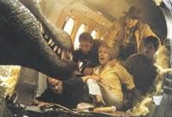

Jurrasic Park III
 Four years have passed since the events of The Lost World: Jurassic Park. The public is aware of the existence of cloned dinosaurs on Isla Sorna, but humans are now prohibited from making contact with the island. Taking advantage of this an illegal boat-towed paragliding operation "Dino-Soar" has been set up to give "safe distance" coastal tours of the island. Young dinosaur enthusiast Eric Kirby (Trevor Morgan) and family friend Ben Hildebrand (Mark Harelik) decide to go parasailing. However, the boat is seemingly attacked by reptiles and left unmanned, heading towards a cluster of protruding rocks. Eric and Ben then detach the tow rope and drift towards Isla Sorna.
Four years have passed since the events of The Lost World: Jurassic Park. The public is aware of the existence of cloned dinosaurs on Isla Sorna, but humans are now prohibited from making contact with the island. Taking advantage of this an illegal boat-towed paragliding operation "Dino-Soar" has been set up to give "safe distance" coastal tours of the island. Young dinosaur enthusiast Eric Kirby (Trevor Morgan) and family friend Ben Hildebrand (Mark Harelik) decide to go parasailing. However, the boat is seemingly attacked by reptiles and left unmanned, heading towards a cluster of protruding rocks. Eric and Ben then detach the tow rope and drift towards Isla Sorna.
Meanwhile, Alan Grant and Ellie Sattler continue their paleontological careers but are now working independently; Ellie is married and has two children while Grant has furthered his digging career, now with a young protégé named Billy Brennan. Together they have made some interesting discoveries about raptors, even using a 3D printer to produce a replica of the creature's resonating chamber, equivalent to a voice box.
Grant is approached by Paul and Amanda Kirby, who claim to be wealthy thrill-seekers who want Grant to give them an aerial tour of Isla Sorna. Grant is very reluctant to begin with, but once the Kirbys' propose a donation to fund his dig, he accepts.
 Grant, Billy and The Kirbys fly to Isla Sorna by their own plane, with three mercenary associates: Cooper, Nash and Udesky. Grant realizes that the Kirbys try to land on the island and tries to stop them but is knocked unconscious by Cooper. Billy wakes Grant after the plane has landed, and they overhear Amanda shouting someone's name through a megaphone. Grant tells her to stop, but she persists. Her actions attract a Spinosaurus. A roar is then heard from the clustered verdancy and Billy thinks it's from a Tyrannosaurus but Alan, who of course have heard such from the actual beast before, deems it came from "something bigger". The mercenaries, who have entered the jungle to make sure the area is "safe", burst through the trees and urgently insist on leaving the island. Billy notes Cooper's absence, but Udesky urges him back into the plane. Cooper appears on the runway as the plane begins to take off, yelling for them to stop the plane. The Spinosaurus emerges from the undergrowth and devours Cooper as Nash is forced to make a premature takeoff.